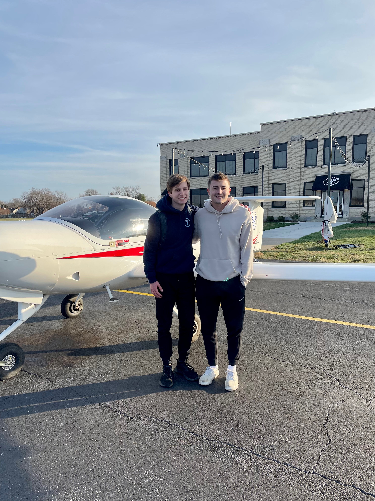
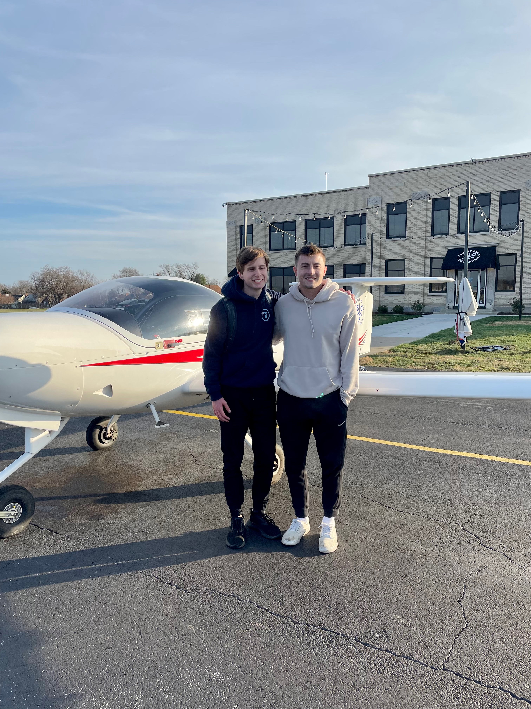

Flying Experience
I recieved my Private Pilots License a month into beginning college. I started as a sophmore and continuted all throughout high-school until taking my checkride before college, failing and taking it again two weeks later and passing. I learned so much about aviation that I could talk about it for forever. It originally was my passion but after recieving my license I realized the life of a pilot wasn't one for me. Some of the best things I learned were problem solving, and making smart decisions. It's insane to me how many accidents happen because people don't make smart decision. An example of this in aviation is that we get a NOTAM, Notice to Air Mission, it tells us the weather, important areas to avoid, and anything we might need. Weather is the big one, as the PIC, pilot in command, it's my responsibility to ensure that I can fly safely in the current weather conditions. It can suck when you planned a whole day around flying and then weather grounds you, and some people would be tempted to push their luck and fly. This is what leads to accidents. In addition to learnign safety with your PPL, their's no ciriculum. I don't get grades, I don't have deadlines, it's entirely up to me how long it'll take. Because of that I have to stay focused and committed throughout the entire 2-3 year process, as otherwise it'll end up taking years or never get done.